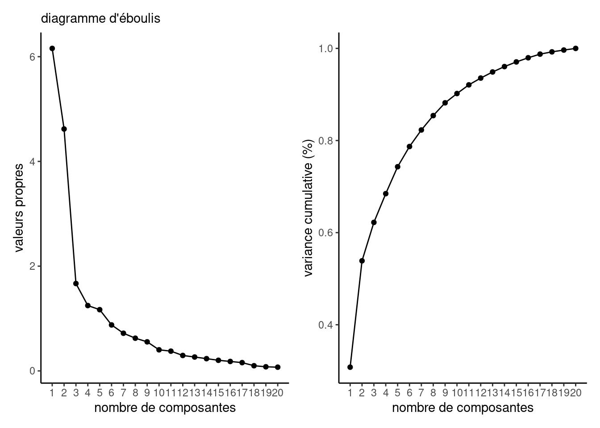
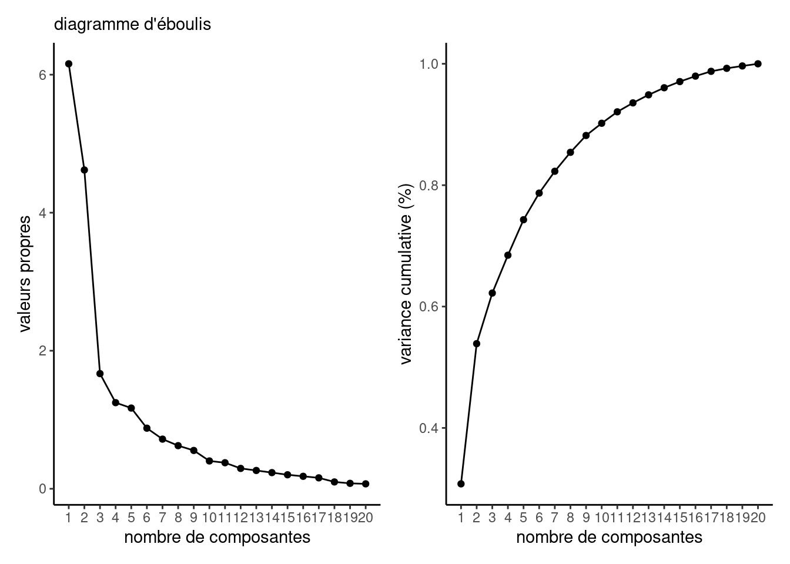
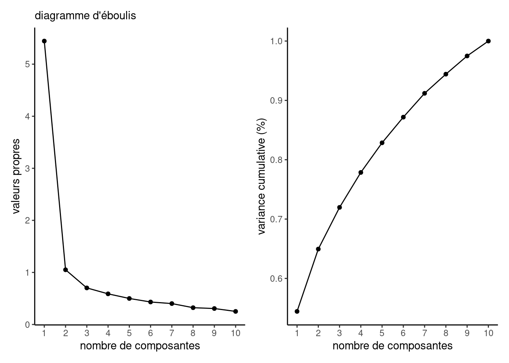

Code
library(dplyr)
library(hecmulti)
db <- bjffacto |> select(!condition)
covdb <- cor(db)
decompo <- eigen(covdb)
eboulis(decompo)
Code
nkaiser <- sum(decompo$values > 1)
var_cumu <- with(decompo,
cumsum(values)/sum(values))Les observations de la base de données bjffacto sont tirées de l’article Bastian et al. (2014) et sont rattachées à une expérience en psychologie visant à corroborer l’hypothèse qu’il y a une coopération accrue entre individus sujets à une expérience traumatisante. La moitié des participant(e)s a dû plonger sa main dans un bain d’eau glacé, tandis que l’autre moitié a dû faire la même chose dans un bain d’eau tiède; les deux groupes devaient ensuite faire un jeu visant à identifier leur niveau de coopération.
La variable condition indique le groupe expérimental (zéro pour groupe contrôle, un pour douleur).
Indication: utilisez la matrice de corrélation pour vos analyses factorielles
Ce sont toutes des échelles de Likert avec le même nombre de modalités, donc comparables entre elles. La différence entre la matrice de corrélation et la matrice de covariance réside dans l’importance accordée aux variables. On mettra moins de poids dans le deuxième cas sur les items plus consensuels (pour lesquels l’écart-type est inférieur).
Il est important pour la suite de retirer la variable condition, qui n’est pas un item du questionnaire (le but étant de calucler les différences d’échelles selon le groupe expérimental).

Le critère des valeurs propres de Kaiser (variances des composantes principales supérieures à 1) indique 5 facteurs, qui conjointement expliquent 74.3 pourcent de la variance totale des items du questionnaire.
Le diagramme d’éboulis indique un coude à partir de deux facteurs.
Loadings:
F1 F2
[1,] -0.719
[2,] -0.557
[3,] -0.761
[4,] -0.537
[5,] -0.742
[6,] -0.849
[7,] -0.805
[8,] -0.570
[9,] -0.872
[10,] -0.803
[11,] -0.578
[12,] -0.551
[13,] -0.763
[14,] -0.775
[15,] -0.685
[16,] -0.788
[17,] -0.688
[18,] -0.596
[19,] -0.835
[20,] -0.799
F1 F2
SS loadings 5.990 4.787
Proportion Var 0.299 0.239
Cumulative Var 0.299 0.539
Loadings:
F1 F2
interested -0.719
distressed -0.557
excited -0.761
upset -0.537
strong -0.742
guilty -0.849
scared -0.805
hostile -0.570
enthusiastic -0.872
proud -0.803
irritable -0.578
alert -0.551
ashamed -0.763
inspired -0.775
nervous -0.685
determined -0.788
attentive -0.688
jittery -0.596
active -0.835
afraid -0.799
F1 F2
SS loadings 5.990 4.787
Proportion Var 0.299 0.239
Cumulative Var 0.299 0.539Rappelez-vous que, peu importe le signe de la corrélation avec le facteur, il est surtout important qu’on considère des variables avec le même signe. Il est possible selon la formulation de la question que le signe soit opposé même si l’échelle est la même, si par exemple: «je fais confiance à mes gestionnaires» versus «je ne suis pas convaincu par l’équipe dirigeante» alors, on pourra inverser l’échelle avant d’aggréger et de créer une échelle.
Logiquement, il faut aussi que les échelles soient constituées de variables semblables: on ne fera pas la moyenne d’un item mesuré sur \([1, 100]\) et d’un autre sur \([-10, 10]\)!
Avec 20 variables explicatives, on ne considérera pas plus de cinq facteurs. Si on ajuste le modèle de manière répété jusqu’à ce maximum, le modèle sélectionné par le AIC contient cinq variables (mais c’est un cas de Heywood), tandis que le BIC retourne le modèle avec deux facteurs.
| k | AIC | BIC | pval | npar | heywood |
|---|---|---|---|---|---|
| 1 | 855.45 | 935.01 | < 2.2e-16 | 40 | 0 |
| 2 | 676.10 | 793.45 | 5.430e-09 | 59 | 0 |
| 3 | 653.16 | 806.31 | 2.687e-06 | 77 | 0 |
| 4 | 626.10 | 813.06 | 0.0009868 | 94 | 0 |
| 5 | 607.76 | 826.55 | 0.0356262 | 110 | 1 |
Si on ajuste le modèle avec deux facteurs, on obtient la même classification des variables par facteur qu’avec le modèle ajusté par la méthode des composantes principales (matrice de corrélation).
Call:
factanal(x = db, factors = 2)
Uniquenesses:
interested distressed excited upset strong guilty
0.531 0.796 0.426 0.804 0.529 0.176
scared hostile enthusiastic proud irritable alert
0.294 0.692 0.212 0.403 0.765 0.735
ashamed inspired nervous determined attentive jittery
0.427 0.386 0.614 0.434 0.602 0.643
active afraid
0.303 0.463
Loadings:
Factor1 Factor2
interested 0.682
distressed 0.424
excited 0.757
upset 0.440
strong 0.686
guilty 0.896
scared 0.839
hostile 0.511
enthusiastic 0.884
proud 0.763
irritable 0.485
alert 0.492
ashamed 0.756
inspired 0.770
nervous 0.612
determined 0.742
attentive 0.622
jittery 0.505
active 0.831
afraid 0.730
Factor1 Factor2
SS loadings 5.546 4.218
Proportion Var 0.277 0.211
Cumulative Var 0.277 0.488
Test of the hypothesis that 2 factors are sufficient.
The chi square statistic is 272.3 on 151 degrees of freedom.
The p-value is 5.43e-09 La solution à quatre facteurs n’est pas intéressante ici, puisque plusieurs variables sont fortement corrélées avec des facteurs. On pourrait les associer et créer des échelles, mais on créera une corrélation entre elles (du fait qu’elles sont construites à partir des mêmes variables) qui n’est pas forcément désirable.
La solution à cinq facteurs (corrélation) fait ressortir davantage de détail en séparant les émotions: degré d’engagement (facteur 1), fébrilité et peur (facteur 2), force et degré d’alerte (facteur 3), peur et honte (facteur 4) et détresse (facteur 5). Comme la frontière n’est pas claire, la solution à deux facteurs pourrait être préférée ici.
Oui pour la solution à deux facteurs avec la matrice de corrélation.
Avec deux facteurs et un point de coupure de 0.5, on retrouve les émotions positives et négatives si on utilise la matrice de corrélation.
interested, excited, strong, enthusiastic, proud, alert, inspired, determined, attentive et activedistressed, upset, guilty, scared, hostile, irritable, ashamed, nervous, jittery et afraid F1 F2
0.9157199 0.8448532 Les deux échelles incluent des variables fortement corrélées et leur cohérence interne est suffisante pour que l’on aggrège en formant des échelles.
condition). Arrondissez à deux chiffres après la virgule et commentez sur les différences entre groupes, le cas échéant.db_echelles <- data.frame(
ech1 = rowMeans(db[,vars[[1]]]),
ech2 = rowMeans(db[,vars[[2]]]),
condition = bjffacto$condition) |>
dplyr::mutate(condition = case_match(
condition,
0 ~ "contrôle",
1 ~ "douleur"))
statsdescript <- db_echelles |>
dplyr::group_by(condition) |>
dplyr::summarize_all(
.funs = list(
moyenne = mean,
ecarttype = sd))
knitr::kable(statsdescript,
digits = 2,
col.names = c("condition",
"moyenne E1",
"moyenne E2",
"écart-type E1",
"écart-type E2"))| condition | moyenne E1 | moyenne E2 | écart-type E1 | écart-type E2 |
|---|---|---|---|---|
| contrôle | 2.80 | 1.27 | 0.83 | 0.37 |
| douleur | 3.05 | 1.34 | 0.82 | 0.45 |
On peut considérer les différences entres groupes à l’aide d’un test de Welch pour deux échantillons (échantillons aléatoires indépendants). Aucune des différences n’est statistiquement significative à niveau 5%.
Tableau 2: Tests-t pour deux échantillons par condition expérimentale pour chacune des échelles.
| statistique | ddl | valeur-p | différence | borne inf. | borne sup. |
|---|---|---|---|---|---|
| -1.09 | 51.99 | 0.28 | -0.24 | -0.7 | 0.21 |
| statistique | ddl | valeur-p | différence | borne inf. | borne sup. |
|---|---|---|---|---|---|
| -0.6 | 49.81 | 0.55 | -0.07 | -0.29 | 0.16 |
Les données sondage_entreprise contiennent les résultats d’un sondage effectué par une compagnie auprès de ses employés.
1. Produisez des statistiques descriptives pour les variables q8 à q17.
tibble [482 × 10] (S3: tbl_df/tbl/data.frame)
$ q8 : int [1:482] 4 3 5 3 3 4 1 3 2 3 ...
$ q9 : int [1:482] 3 3 5 3 3 4 1 4 2 3 ...
$ q10: int [1:482] 4 3 5 2 3 4 1 5 4 5 ...
$ q11: int [1:482] 4 3 5 2 3 5 1 4 4 4 ...
$ q12: int [1:482] 4 3 5 3 3 5 1 4 3 3 ...
$ q13: int [1:482] 4 2 5 4 4 5 1 4 3 4 ...
$ q14: int [1:482] 2 3 5 4 3 5 1 4 3 3 ...
$ q15: int [1:482] 3 3 5 3 3 5 1 3 3 2 ...
$ q16: int [1:482] 3 3 5 3 3 3 1 3 3 2 ...
$ q17: int [1:482] 4 3 5 3 3 4 1 3 3 4 ...On peut utiliser summary pour obtenir les statistiques descriptives, mais les échelles de Likert sont toutes de 1 à 5.
| moyenne | écart-type | histogramme |
|---|---|---|
| 3.44 | 0.91 | ▁▁▇▅▂ |
| 3.39 | 0.97 | ▁▂▇▆▂ |
| 4.33 | 0.73 | ▁▁▂▇▇ |
| 4.10 | 0.84 | ▁▁▂▇▆ |
| 3.83 | 0.89 | ▁▁▇▇▆ |
| 4.02 | 0.84 | ▁▁▃▇▆ |
| 3.88 | 0.96 | ▁▁▅▇▅ |
| 3.54 | 0.85 | ▁▁▇▅▂ |
| 3.54 | 0.91 | ▁▁▇▆▃ |
| 3.51 | 0.84 | ▁▁▇▅▂ |
On peut voir sur le corrélogramme que toutes les variables sont très corrélées entre elles.
2. Combien y a-t-il de répondants? Déterminez si ce nombre est suffisant pour effectuer une analyse factorielle.
Il y a 482 observations et 10 variables. C’est suffisant pour une analyse factorielle, mais le nombre de facteurs ne sera probablement pas très élevé.
3. Utilisez la méthode d’estimation par composantes principales et le critère de Kaiser pour ajuster le modèle d’analyse factorielle. Combien de facteurs serait-il raisonnable de retenir?

Loadings:
F1 F2
q8 -0.836
q9 -0.850
q10 -0.814
q11 -0.619
q12 -0.716
q13 -0.821
q14 -0.652
q15 -0.633
q16 -0.677
q17 -0.713
F1 F2
SS loadings 3.698 2.797
Proportion Var 0.370 0.280
Cumulative Var 0.370 0.649Le critère de Kaiser (valeurs propres supérieures à 1) avec la matrice de corrélation suggère deux facteurs. Le diagramme d’éboulis donne deux facteurs également avec la matrice de corrélation.
On peut constater en étudiant les chargements que le premier facteur est très corrélé avec plusieurs variables. En augmentant le point de coupure, on obtient un regroupement avec grosso-modo pour le facteur 1 (Q8-Q9 et Q14-Q17) les questions qui se réfèrent à la réputation sociale de l’entreprise et la balance pour le facteur 2 (Q10-Q13) pour la réputation sur le plan de la gestion. Seule la question Q15 semble un peu à part
4. Répétez l’exercice, cette fois avec la méthode du maximum de vraisemblance
- **Est-ce qu'un de ces modèles ajustés est un cas de quasi-Heywood?**
- **Combien de facteurs les critères d'information recommendent-ils?**
- **Si vous ajoutez des facteurs, est-ce que votre interprétation change?**| k | AIC | BIC | pval | npar | heywood |
|---|---|---|---|---|---|
| 1 | 2671.696 | 2755.255 | < 2.2e-16 | 20 | 0 |
| 2 | 2469.875 | 2591.036 | < 2.2e-16 | 29 | 0 |
| 3 | 2401.128 | 2555.712 | 6.646e-05 | 37 | 0 |
| 4 | 2374.255 | 2558.084 | 0.5227 | 44 | 1 |
On voit que le modèle AIC suggère un modèle à quatre facteurs (un cas de quasi-Heywood), tandis que le BIC suggère plutôt trois facteurs. Le test du rapport de vraisemblance comparant la corrélation empirique au modèle d’analyse factorielle indique que le modèle est raisonnable à partir de quatre. Le problème de convergence nous amène à interpréter les résultats pour le modèle à quatre facteurs avec un grin de sel.
Puisque la corrélation est très élevée, il est difficile ici d’interpréter les facteurs résultants parce que plusieurs variables sont corrélées avec de multiples facteurs. On peut augmenter le point de coupure à 0.5 pour déterminer les amalgames suivants:
L’interprétation change puisque ce qui était dans le premier facteur se retrouve dans le troisième, avec Q9 qui est présente dans les deux. En pratique, on pourrait décider de l’associer à l’une ou l’autre des échelles, selon la cohérence interne, et la logique.
5. Créez des échelles et vérifiez leur cohérence interne.
[1] 0.8768725[1] 0.8292554On voit que les deux échelles créées ont un \(\alpha\) de Cronbach de plus de 0.8, donc les échelles sont cohérentes. C’est en grande partie dû à la forte corrélation observée entre tous les items